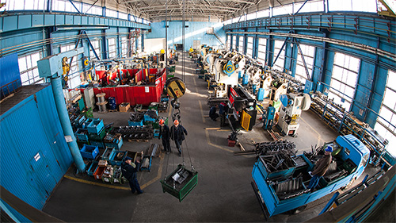

Про нас
ТОВ «СТОЇК» - виробниче підприємство, основною діяльністю якого, є випуск металевих деталей для потреб будівництва та машинобудування.
Більш ніж 20 років ТОВ «СТОЇК» є постачальником деталей, вузлів і комплектуючих виробів ліфтового обладнання для заводів компанії ОТІС в Західній та Східній Європі та найбільших ліфтових виробництв України. На нашому підприємстві здійснюється замкнутий цикл виробництва – проектування і технологічна підготовка виробів, складальне, інструментальне виробництво.
Склад висококваліфікованих фахівців, високоточне обладнання інструментальної, складальної, зварювальної і заготівельної дільниць, дало нам можливість впровадити систему управління якістю Q-plus міжнародної організації UTC, що забезпечує випуск бездефектної продукції.
Основа підприємства - цех обробки листового металу з об'ємом виробництва 200 тонн на місяць, базовим обладнанням якого, є преси зусиллям від 10 до 160 тонн.
Продукція:
- Деталі, вузли і вироби ліфтового обладнання:
- Панелі купе кабіни і дверей шахти;
- Обрамлення дверей шахти, холові коробки, індикатори;
- Замки, канатики, кронштейни та інші елементи дверей шахти;
- Кронштейни кріплення, стикові планки направляючих кабіни і противаги;
- Огорожі противаги.
- Запасні частини для більшості серій ліфтів, що знаходяться в експлуатації, виробництва компанії ОТІС та інших торгових марок.
- Деталі, вузли і вироби, що використовуються при модернізації ліфтів.
- Деталі, які використовуються в будівництві:
- Кронштейни, майданчики, кляймера, деталі кріплення для облицювання будівель;
- Фасадні касети для вентильованого фасаду;
- Комплектуючі садово-паркових меблів та вуличного декору.
- Вироби з металу за спецзамовленням.